CodeQLU-BootChallenge(CC++)
[toc]
# 背景
需要在 U-Boot 中寻找一组 9 个远程代码执行漏洞
漏洞点位于 memcpy 函数
但并非所有调用 memcpy 函数的都存在漏洞
所以我们需要减少误报率，找到真正存在漏洞的 memcpy 调用
放上题目链接
关于环境搭建根据题目提示就可以顺利完成哦
也可以参考我的文章 "CodeQL for VSCode 搭建流程"
不出意外会放在我的博客中
# Step 3 - our first query
在项目中寻找所有名为’strlen’的函数
语法类似于 sql 语句
import cpp : 导入 c++ 规则库
From Function f1 : 声明一个 Function 类的变量为 f1
where f1.getName() = "strlen" : Function.getName () 顾名思义用于获取此声明的名称，也就是名称和"strlen" 相等的声明会被挑选出来
select f1,"a function named strlen" : select 后接要在 result 中展示的项目，用逗号分隔
3_function_definitions.ql
1 | import cpp |
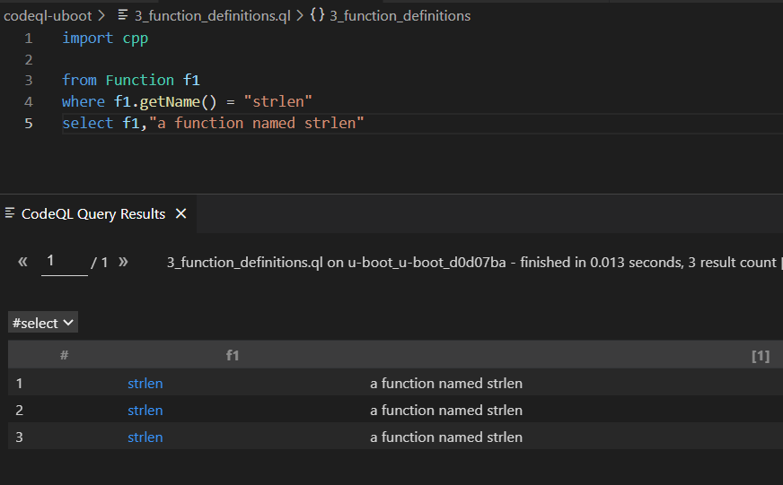
直接在 main 提交
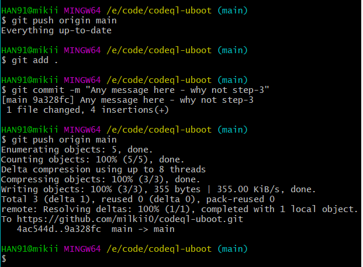
commit 中查看结果，通过
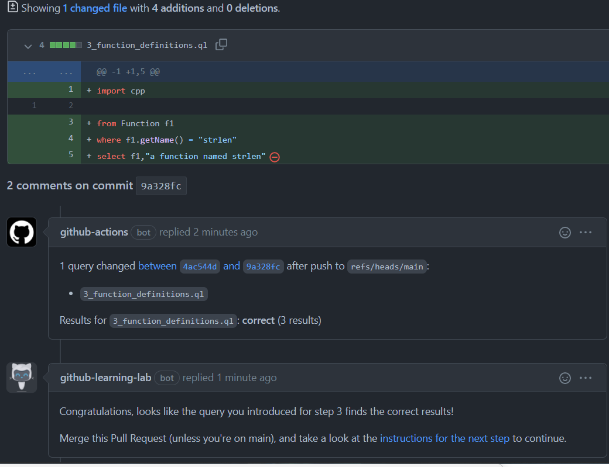
# Step 4 - Anatomy of a query
仿照上一步，在项目中寻找所有名为’memcpy’的函数
4_function_definitions.ql
1 | import cpp |
提交查看结果，通过
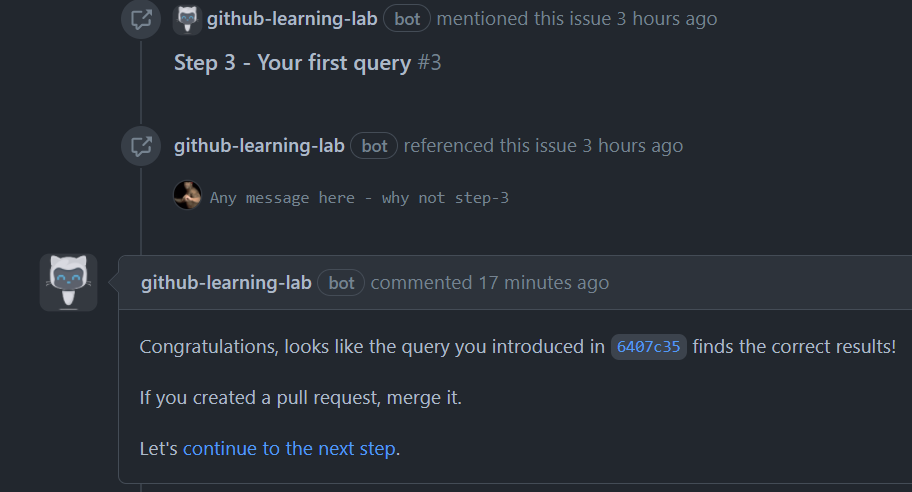
# Step 5 - Using different classes and their predicates
自定义规则，查找三个名为 ntohs , ntohl or ntohll 的宏定义
需要一个紧凑的查询，而不是三个查找案例组合在一起
给出以下两种方法
- 利用正则表达式
string类有一个方法regexpMatch，接收器将参数与正则表达式匹配
那我们需要先找到宏定义，再对该字符串进行正则匹配（使用的 java 的匹配模式）
5_function_definitions.ql
1 | import cpp |
运行
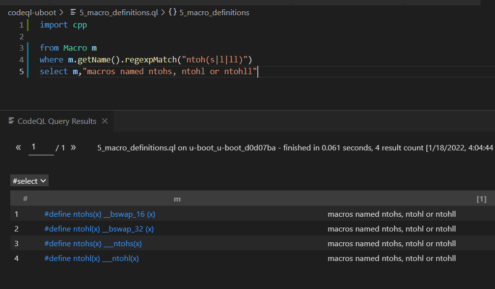
- 使用集合表达式
给出的格式：<your_variable_name> in [“bar”, “baz”, “quux”]
1 | import cpp |
运行后和之前的结果相同，提交通过
PS：
上学的时候为了过考试自学的 c++，就是一些简单的语法
看题目说明也没看明白 ntoh 族函数到底是个啥
后来看见了 swing 的文章
才知道 ntoh 族函数通常用来进行网络字节序到主机字节序的转换
其实自己看到的时候就应该去查的，但是因为对题目影响不大就犯懒没去:-(
以后不能这样了！看见没见过的看不懂的一定要去弄清楚
# Step 6 - Relating two variables
找到所有对 memcpy 函数的调用
先看看给的例子
FunctionCall.getTarget() 查询该函数被调用的位置
直接和 Function 类型的 fcn 对比值，说明他返回的值应该就是 Function 类型（这点在下面优化中会用到）
通过 Function.hasName() 获取方法名
1 | import cpp |
如果你想要省略中间变量 Function ，使查询的更加紧凑，可以参考以下两个对比
c1.getClass2() 返回的是 Class2 类型的值，因此可以直接调用 Class2 的方法
1 | from Class1 c1, Class2 c2 |
根据以上案例思考
我们需要找到 memcpy 函数被调用的位置，可以使用
FunctionCall.getTarget()
并希望查询更加紧凑，可以直接获取找到的函数的名称并进行判断
FunctionCall.getTarget().getName="memcpy"
6_memcpy_calls.ql
1 | import cpp |
提交通过
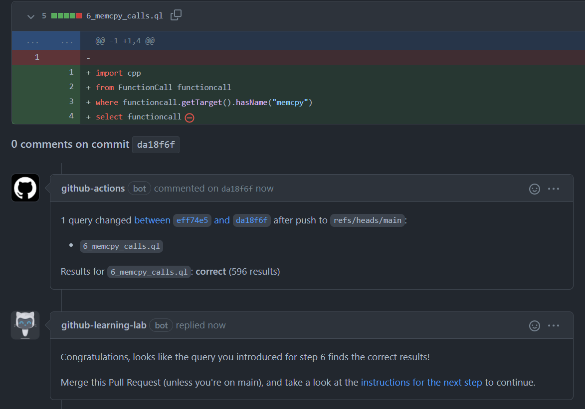
# Step 7 - Relating two variables, continued
寻找所有对 ntoh* 宏定义的调用
这里用到的是 MacroInvocation 这个类，顾名思义就是宏定义调用的类
鼠标悬浮看其注释也能看出来
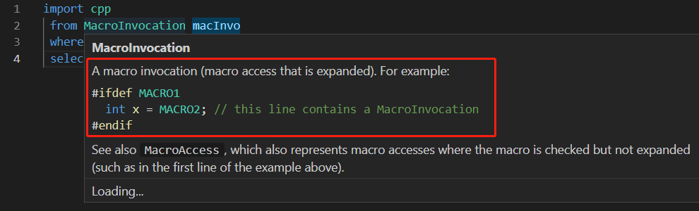
那么我们就可以通过 getMacro() 寻找被调用的宏定义，并得到返回的 Macro 类型值
再获得找到的 Macro 名称进行正则匹配，即可获得我们想要的结果
1 | import cpp |
（备注：关于正则表达式，不太会写，找的 java 正则 api 看的。
. 表示匹配除换行符 \n 之外的任何单字符， * 表示零次或多次，
我这里希望得到的结果是以 ntoh 开头的宏定义都会被选中。
如果有不对的地方，还希望可以被提出指正◔ ‸◔）
提交通过
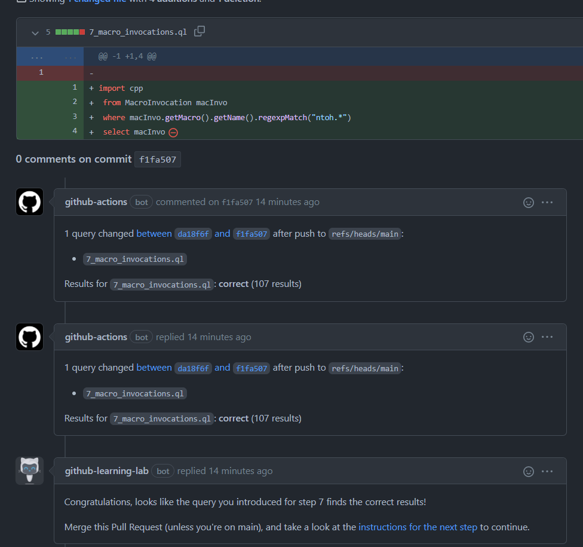
# Step 8 - Changing the selected output
根据提示，使用 getExpr() 这个 predicate
先看看这个 getExpr() 的注释说明
是用来获取宏定义表达式的
如果顶级拓展元素不是表达式，它只是一条语句，将不会被选中列为结果
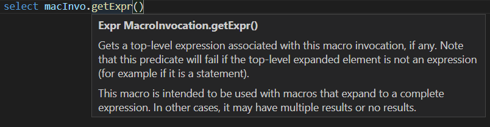
使用 select macInvo.getExpr() ，就能获得宏定义调用相关的表达式
8_macro_expressions.ql
1 | import cpp |
例如点击其中一个结果，就会跳转至下图位置
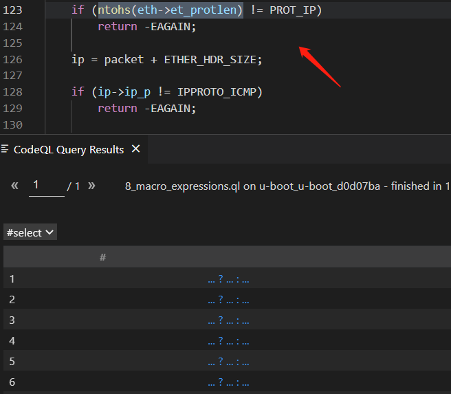
提交通过
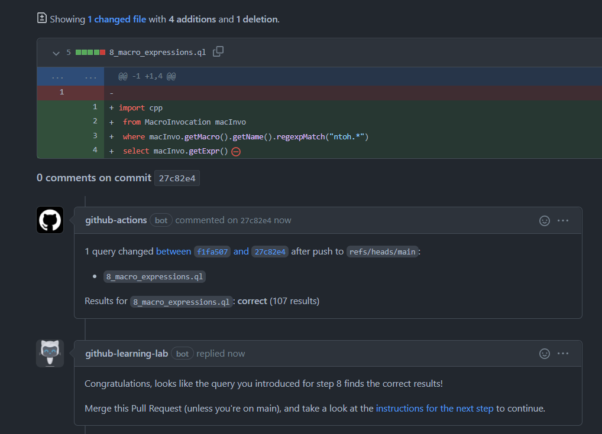
那么查询表达式和查询调用的区别是啥？
看注释说明，
getExpr() ：
Gets a top-level expression associated with this macro invocation,if any.
Note that this predicate will fail if the top-level expanded element is not an expression (for example if it is a statement).
This macro is intended to be used with macros that expand to a complete expression.
In other cases, it may have multiple results or no results.
获取关于宏调用的顶级表达式
注意，如果顶级扩展元素不是一个表达式的话查询将失败（例如，它是一个语句）
此宏用于扩展为完整表达式的宏，在其他情况下可能会有多个结果或没有结果
getMacro() ：
Gets the macro that is being accessed.
获取正在访问的宏
即 getMacro() 会获取所有调用的宏，即使他只是一个语句
而 getExpr() 只会获取宏调用的顶级表达式
所以 getExpr() 得到的结果集应该包含于 getMacro() 的结果集
这里放上语句和表达式的区别讨论链接
# Step 9 - Write your own class
首先看看学习 exists 关键词给出的例子：
这个规则只是为了获取不秃头的所有人
不秃头的人都会有头发，那么他们的头发都会对应一个或多个颜色
其中 t.getHairColor() 会返回一个 string 类型的值，例如 "red"
如果我们需要获得不秃头的人，我们并不需要知道他们头发的具体颜色，只需要知道 t.getHairColor() 会返回 string 类型的值即可，因为秃头 getHairColor() 时，不会返回任何值
所以我们利用 string 类型的变量完成该操作
更好的方式是使用 exists 关键词，因为我们只是在 where 中使用该变量
例如， exists(string c | t.getHairColor() = c) 使用了 string 类型的临时变量，用于获取 t.getHairColor() 返回了 string 值的 t ，也就是查询了所有头发颜色的值为 string 类型的人
1 | from Person t |
再来看看类定义中给出的案例
1 | class OneTwoThree extends int { |
以上代码定义了一个名为 OneTwoThree 的类，继承于 int
类似于构造函数的部分是 this = 1 or this = 2 or this = 3
文档中解释说明这个类中包括了 1,2,3 这三个值
运行以下规则，可以发现 ott 中确实有 1，2，3 这三个值
1 | import cpp |
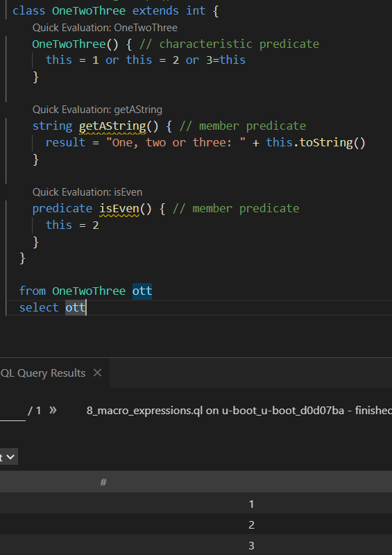
其中还有一个熟悉的单词 predicate
这个是在类的主体内定义的谓词，是使用变量来限制类中可能的值的逻辑属性
举个例子，运行以下规则，就会得到值 2
1 | class OneTwoThree extends int { |
运行截图：
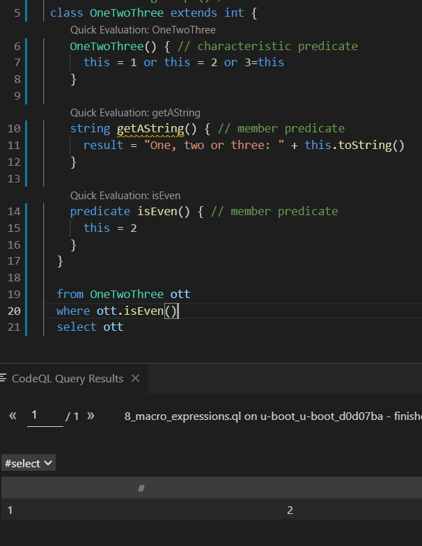
再更改规则如下：
1 | class OneTwoThree extends int { |
他们会得到相同的结果
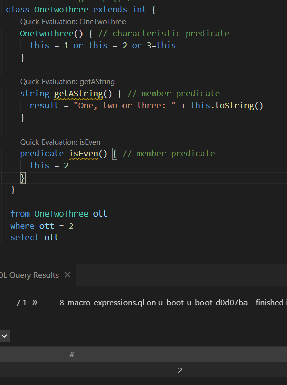
也就是说 where ott.isEven() 和 where ott = 2 做出的是相同的限制
那么我们也就能更好地理解， predicate 特征是用于限制类中可能值的逻辑属性了
其中 string getAString() 就不必多说，返回一个字符串，其中包含对应值
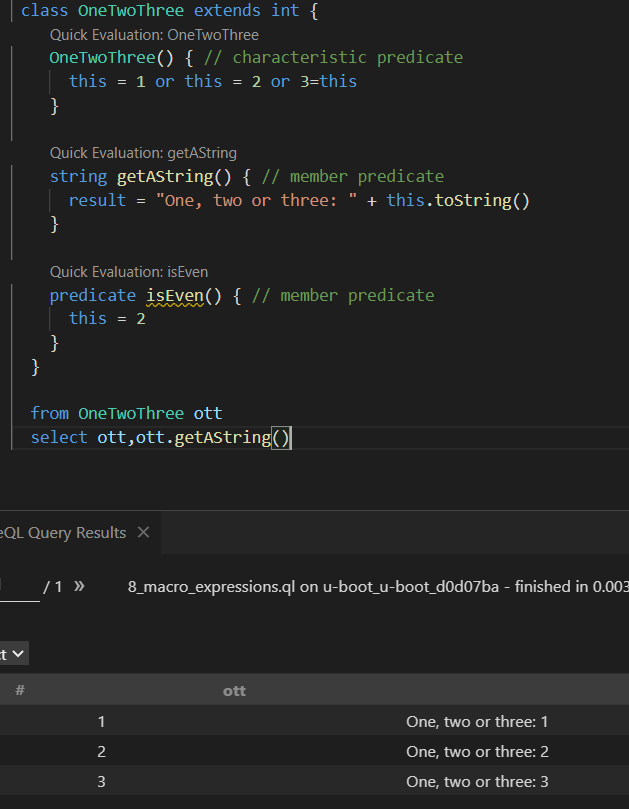
其中我发现一个很神奇事，不知该如何解释
我将代码中 this=1 改成 1=this 也会得到一样的结果，没有任何不同或报错
它和赋值语句不同，但好像又具有相似的功能
在对变量做限制时，例如 where ott = 2 ，它就变成了一个符号，用于对两个值进行比较，这里还好理解，因为 sql 语法类似
但是同样在以下代码中
1 | predicate isEven() { // member predicate |
this=2 也是用于对两个值进行比较
我认为这是由于 predicate 带来的改变，使得其中的代码和 where 后的代码具有相同得到功能
如果有更好的见解，还不忘赐教
最后来写题
题目给了模板和提示
按照 step8 中的规则进行编写， exists 第二个参数放上 step8 中的 where 条件
由于 select 由题目给出并为 Expr 的子类，所以我们需要增加一个条件获取宏调用相关表达式
根据以上 exists 案例可知，我们需要在 mi.getExpr() = 后面写出他返回值的类型，这样当 mi 为表达式时，就会被选中
NetworkByteSwap 是 Expr 的子类，因此
9_class_network_byteswap.ql
1 | import cpp |
# Step 10 - Data flow and taint tracking analysis
最后一步，进行数据流分析
先了解以下我们需要查询的函数背景， ntoh* 函数会返回一个数，并用于 memcpy 的第三个参数 size ，所以我们需要追踪的数据流就是从 ntoh* 到 memcpy
在 C/C++ 写网络程序的时候，往往会遇到字节的网络顺序和主机顺序的问题。 这时就可能用到 htons (), ntohl (), ntohs ()，htons () 这 4 个网络字节顺序与本地字节顺序之间的转换函数
memcpy 指的是 c 和 c++ 使用的内存拷贝函数，memcpy 函数的功能是从源 src 所指的内存地址的起始位置开始拷贝 n 个字节到目标 dest 所指的内存地址的起始位置中
创建 Config 类，查找此类的数据流并进行污染点追踪分析
进行数据流分析，我们需要用到，部分代码已经在给出的模板中
1 | import semmle.code.cpp.dataflow.TaintTracking |
我们需要写两个 predicate ，一个是来源 isSource ，一个是接收器 isSink
isSource 中我们需要查询 ntoh* 宏定义调用的相关表达式，这一步我们已经在 NetworkByteSwap 中写过了
isSink 中我们需要查询调用 memcpy 函数时，传入的第三个参数 size ，这一步我们需要新增加的步骤是获取参数
弄清楚这些后，在编写规则时，根据提示完善代码
我们就能获得 10_taint_tracking.ql 的答案
1 | /** |
# 传送门
cpp 规则语法说明
Java 正则模式
给出的参考案例：CVE-2018-4259: MacOS NFS vulnerabilties lead to kernel RCE（知识点挺多的）
codeql-swing（swing 的语言云淡风轻，条理清晰，如沐春风，我的的语言阿巴阿巴阿巴）
讨论区